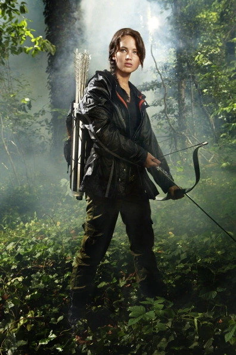
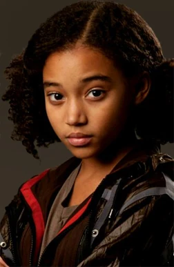

Hunger Games: Characters
Katniss Everdeen
Jennifer Lawrence
Role: The "Girl on Fire" and protagonist of the series. Personality: Strong, resourceful, and fiercely protective of her loved ones. Katniss becomes the face of the rebellion, unwillingly thrust into the role of a symbol of resistance. Her ability to survive the harshest circumstances, along with her natural talent with a bow and arrow, makes her both a formidable opponent and an icon.
Peeta Mellark
Jennifer Lawrence
Role: The "Boy with the Bread" and Katniss's fellow tribute in the 74th Hunger Games. Personality: Kind, selfless, and deeply in love with Katniss. Peeta's unshakeable loyalty and strength of character shine through, even in the face of manipulation and betrayal by the Capitol. He’s an expert with words and has an innate ability to charm and sway audiences, though his true power lies in his love for Katniss.
Haymitch Abernathy
Woody Harrelson
Role: Former victor of the Hunger Games and mentor to Katniss and Peeta. Personality: Cynical, sarcastic, and often drunk, but with a sharp mind and an even sharper survival instinct. Haymitch is an unlikely mentor who helps Katniss and Peeta navigate the Games and the political intricacies of the Capitol. Beneath his gruff exterior lies a deeply strategic and caring individual who has seen firsthand the devastating effects of the Hunger Games.
Gale Hawthorne
Liam Hemsworth
Role: Katniss’s best friend and potential love interest. Personality: Gale is a strong-willed and passionate individual, with a deep sense of justice. As Katniss’s hunting partner, he’s skilled with a bow and shares her hatred of the Capitol. Gale’s personal evolution over the series, especially his increasing desire for revolution, complicates his relationship with Katniss.
Rue
Amandla Stenberg
Role: Tribute in the 74th Hunger Games. Personality: Innocent, clever, and brave, Rue is one of Katniss’s closest allies in the Games. Her death is one of the most poignant moments in the series, symbolizing the loss of childhood innocence and the brutality of the Capitol.